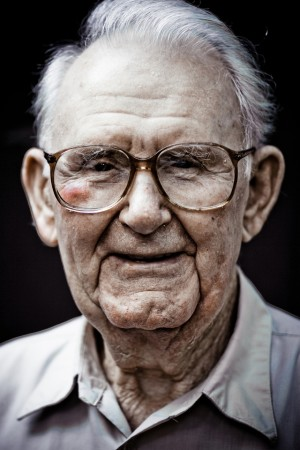

Website Planning Document
Target Audience Description
The target audience of alwaysready.info description is as follow:
- Who:People interested in visiting the towns of Preston, Soda Springs, and Fish Heaven located in Idaho State. Also, young married couples , youth, active single young adults, senior citizens, and families in general who live in the area.
- Age: 10 and up.
- Technology:the mayority of the audience will access the site through movil devices like cell phones and i-pads, senior citizens will probably use home computers most of the time.
- Income:Income types will vary according to age and levels of education ( $ to a medium of $50,000 and above annually).
- Motivation:Wanting to know weather conditions in the area with the purpose of planning activities; and be ready to spend time outdoors with the right clothing and necessary accessories.
Personas
Stacey Johnson
.jpg)
- Occupation:Student at Brigham Young University-Idaho and part time employee at a local veterinary clinic as an assistant.
- Demographic and Education:She is 25 years old.Lives in a rented apartment with her sister. Spends most of her time studing, at work,or with her dog Charlie, sibling and friends during free time. Has earned her bachelor's degree and is currently working towards a master degree in Veterinary Sciences.
- Goals and motivation for using the site:Keep being independent and prepare. Her main goal at the moment is to graduate with honors in her chosen field, start working as a vet and keep herself phisically active and healthy by spending time outdoors. She is a very busy young lady, and likes to be ready in case of weather changes. She also visits the site with the purpose of finding out what activities are available in the area.
- Social:At the moment she is away from home, so she tries to spend quality time with her sister when possible, to treasure her relationship with her close friends and to enjoy her dog Charlie as much as she can.
- Technology:She uses her laptop for getting school assignments done, but most of the time her main source for using technology is her phone, which she takes with her everywhere. It's easy to use and very reliable.
- Quote:"We should treasure the people in our lives by making memories together."
Peter Williams

- Occupation:Peter is a retired Airforce Pilot.
- Demographics and Education:He is 80 years old. He has a master's degree in Aerospace Engineering. He worked for the Airforce for 20 years as a jet pilot, retired and went to worked for American Airlines for another 10 as a captain for a flight crew.
- Social:Peter has being living as a retirie for quite some time now. He loves to have her children and grandchildren over often. He is always very active and like to be involved in family activities. He also likes to spend quality time outdoors with his wife Susan or with his children and grandchildren individually
- Technology:Peter is not very fond of devices. He prefers using older phone models, but with the help of his family he is learning how use the computer at home, and he received a cell phone for his birthday. Slowly he is learning how to use technology to make purchases online, look up the weather and find fun activities in his community or nearby towns, where he can make good memories with his loved one. One thing he is enjoying about his phone is the easy accesibility to local news and entertainments.
- Quote:"Life and loved ones are precious...there is no time to waste!"
Scenarios
- What local activities will be coming up in the near future?
- What kind of clothing should I tell my children and their families to bring when they come to visit in a few weeks?
- Where can go on a date?
- I was too busy last week to attend the town's festival, I wonder how it went?
- I would like to know what kind of weather Preston City will have during the winter season when we make our trip up there.
- What useful tips should I follow to stay safe during the hot season?
- I wish I could see some images of Soda City,so I can have an idea of what to expect.